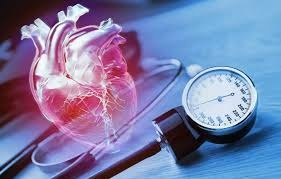
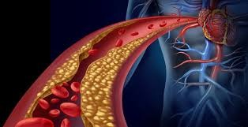

Un trastorno metabólico ocurre cuando hay reacciones químicas anormales en el cuerpo que interrumpen este proceso. Cuando esto pasa, es posible que tenga demasiadas o muy pocas sustancias que su cuerpo necesita para mantenerse saludable.
La diabetes es una enfermedad metabólica crónica caracterizada por niveles elevados de glucosa en sangre (azúcar en sangre), que con el tiempo produce daños graves en el corazón, los vasos sanguíneos, los ojos, los riñones y los nervios; esto ocurre cuando el cuerpo se vuelve resistente a la insulina o no produce suficiente insulina.
La hipertensión se desarrolla cuando la presión de la sangre en nuestros vasos sanguíneos es demasiado alta (de 140/90 mmHg o más). Es un problema frecuente que puede ser grave si no se trata. Las personas con hipertensión pueden no tener síntomas. La única forma de detectarla es tomarse la tensión arterial. Hay factores ambientales que aumentan el riesgo de sufrir hipertensión y las enfermedades asociadas a ella, en especial la contaminación atmosférica.
Por otro lado, hay factores de riesgo no modificables, como los antecedentes familiares de hipertensión, edad superior a los 65 años y la concurrencia de otras enfermedades, como diabetes o nefropatías.

La dislipidemia se refiere a niveles anormales de lípidos en el torrente sanguíneo, lo que representa un factor de riesgo significativo para las enfermedades cardiovasculares (CV). La desregulación de estos niveles lipídicos ya sea por predisposiciones genéticas o factores de estilo de vida, puede provocar aterosclerosis y otras complicaciones CV.

La Organización Mundial de la Salud (OMS) define a la obesidad y el sobrepeso como la “acumulación anormal o excesiva de grasa que puede ser perjudicial para la salud”. “La obesidad es uno de los principales factores de riesgo para numerosas enfermedades crónicas, entre las que se incluyen la diabetes, las enfermedades cardiovasculares, la hipertensión y los accidentes cerebrovasculares, así como varios tipos de cáncer. Además, los niños con sobrepeso tienen un mayor riesgo de tener sobrepeso o ser obesos en la edad adulta.”, ha advertido desde hace muchos años la OMS.
Este taller presenta una alternativa de productos conservados mediante procesos típicos de transformación, en los cuales se utilizará un lenguaje sencillo para que todo público tenga acceso a estas tecnologías.
A partir de diversas sesiones teórico - prácticas, presentadas en el cronograma de actividades en las que se mostrarán los antecedentes de salud y nutrición, aspectos técnicos y de procesamiento, y su aplicación para el autocuidado.